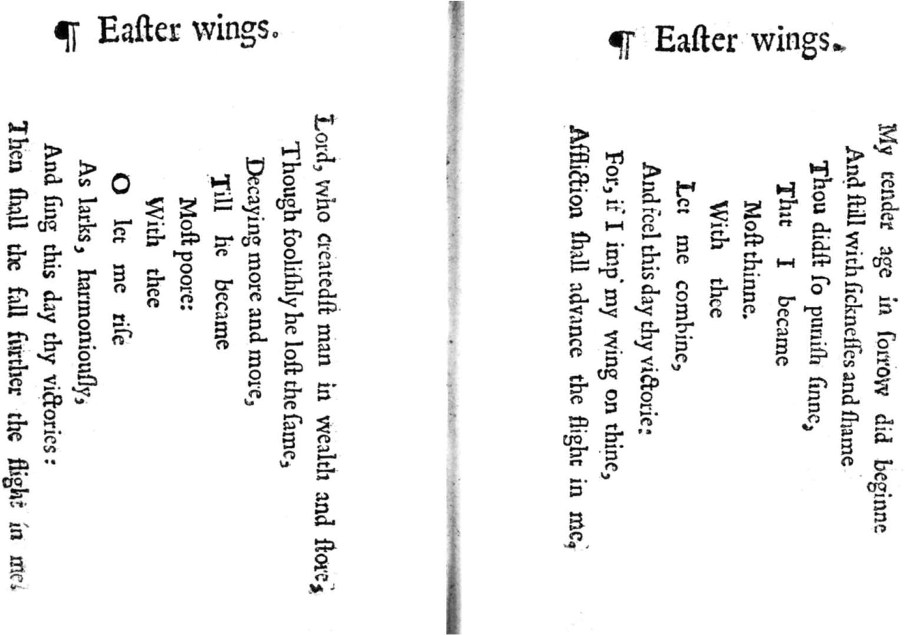

“我希望聪明的年轻诗人能够记住我关于散文和诗歌的简单定义，”柯勒律治在《席间谈话》的某条记录（标注的日期是1827年7月12日）中这样写道，“散文——按照最佳次序进行排列的文字，诗歌——按照最佳次序进行排列的最佳文字。”如果作家花费大量心血来选择最佳文字，并且按照最佳次序进行排列，那么读者在阅读文学文本时，就要特别注意作者的措辞。学习英语的学生还要确认，他们所阅读的文字正确无误。但是，不管作者在创作时用的是鹅毛笔还是钢笔，是打字机还是文字处理软件，有一点可以肯定：从作者的创作时刻到读者的阅读行为，这是一个复杂的过程。作者的反复推敲、编辑的干预，以及印刷厂的错误，这些因素都会对此产生影响。
在英语研究史上，确保文本的准确性一直是非常重要的工作。18世纪时，学者开始用编辑希腊语和拉丁语经典作品的那套程序来修订并注释莎士比亚和弥尔顿的作品。刘易斯·西奥博尔德以极其严谨的态度来对待莎士比亚的作品，与之相反的则是亚历山大·蒲柏，他所编辑的莎士比亚作品并没有刻板地遵循学术惯例。在一部讽刺性的史诗作品中，蒲柏把刘易斯·西奥博尔德变成了愚人国的国王，他创作这部史诗的目的就在于戏仿此类过度注释的学术性版本（《愚人传》，1728-1729）。但这并没有吓倒剑桥大学的学者理查德·本特利，他在不久后就出版了新版《失乐园》，对原先的版本做了大规模修订，并且给出他的解释。比如，本特利不相信弥尔顿这样的优秀作家会故意使用诸如“可见的黑暗”这类不恰当的矛盾修辞法。于是，他将这个短语改为“透明的阴郁”。
英格兰文学史上最著名的人物是莎士比亚笔下的哈姆雷特。他时而躁动不安，时而沉思冥想；他与自己的良知和记忆进行着搏斗；他的个体自我和公共自我始终处于紧张状态；作为儿子和爱人，他的不同角色之间存在冲突。就这些方面而言，他代表着现代西方人对人的本质提出的疑问。我们有圣洁的精神生活，我们有按照自己的意愿进行思考的自由，我们还有选择死亡的权利，我们把这些因素都投射到他的个人演说（独白）中。
哈姆雷特，正如他自己所承认的，是个由“文字，文字，文字”所构成的人物。但是我们究竟在多大程度上有把握认为，我们了解莎士比亚在塑造这个人物时所使用的文字？
不妨来看一下英格兰文学中最著名的那句台词。《哈姆雷特》初版于1603年，采用的是袖珍版的四开本（将八个版面的内容印在一张大纸上，然后两次对折得到四页，因此每一页都是原来纸张大小的四分之一）。书名页上印有如下文字：丹麦王子哈姆雷特的悲惨历史，作者威廉·莎士比亚。此剧已由殿下的仆人在伦敦多次演出；此外，在剑桥大学、牛津大学以及其他一些地方也有演出（这段文字不同于现代拼写方式，这是因为在近代印刷厂中，字母v和u以及i和j可以互换）。在这个最早的四开本中，哈姆雷特在思考生死问题时，说的第一句话是：“生存，还是死亡，是的，这就是问题所在。”在这行台词（指英文原版）中，I是Ay的拼写变体，意思是“是的”。
第二版四开本于一年后出版，书名页上的文字变更如下：丹麦王子哈姆雷特的悲惨历史。作者莎士比亚。基于真实、完善的底稿，本版系最新印制，且内容较初版扩增近一倍。这等于说：如果你去年买了第一版四开本，你买到的是一个极不完善的版本，内容不到原作的一半，并且包含各种错误的或者有瑕疵的解读，而你现在可以购买的是完整的授权文本。在新版中，哈姆雷特那段独白的第一句话变成了我们熟悉的文字：“生存，还是死亡，这是个问题。”
1623年问世的第一版对开本《莎士比亚戏剧集》采用更大的开本，价格也更为昂贵，这个版本的《哈姆雷特》较之四开本有许多变化。其中，“生存，还是死亡”这段独白的开头部分和第二版四开本几乎一致，只不过“问题”一词的首字母改为大写，并且该句以冒号结束，强调此处的暂停意味，以替代原来表示轻微暂停的逗号。
后来，这段独白的文字发生了大量变化，最明显的就是有多处使用“天堂”一词来代替“上帝”。另外，对开本和第二版四开本一致认为，哈姆雷特说这段话的时候是在对开本标注的第三幕中（四开本没有对剧本进行划分），在演员们抵达埃尔西诺之后。然而，在第一版四开本中，哈姆雷特的独白出现在早先的一处场景中，当时他一边看书一边走上舞台。
由于莎士比亚的原始手稿没能保存下来，后世的学者只能通过推测来追溯这出戏从最初的几次演出到早期的几个印刷版本之间的发展历程。他们依据现存的若干证据作出推断，具体包括：伊丽莎白时代剧作家的写作习惯、剧院常备篇目的频繁变动，以及近代印刷厂的一些惯例。关于《哈姆雷特》三个早期版本各自的地位，学界依然争论不休，但大多数学者认为，第一版四开本让我们大致看到了该剧在早期演出时所用的文本，第二版四开本更接近于莎士比亚本人的完整剧本，第一版对开本则是他所在的“张伯伦勋爵剧团”（后来改名为“国王剧团”）的权威性演出文本。这个版本在原剧本的基础上做了一些针对舞台表演的修订，同时也受到审查制度的影响，比如当时的某个议会法案禁止在舞台上说出“上帝”一词。
早期文本的出版是另一段旅程的开始，通过这种方式，后世的读者和剧团得以接触到这出戏。文学作品要想获得长久的生命力，先决条件就是文本的传播。没有这些不同版本的作品，就没有莎士比亚。没有编辑的努力，课堂里就没有可供研究的文本。
在编辑像《哈姆雷特》这样存在多个原始文本的作品时，容易引发争议的关键问题是，究竟应该以哪一个原始文本为基础来进行修订。莎士比亚剧作的早期文本在内容上有所不同，原因可能是演员的错误记忆，也可能是印刷工的排字错误，但是另有一些文本变体是作者本人或剧团主动修订的结果。在这种情况下，在原始版和修订版之间很难抉择。比如，《李尔王》的早期文本有着非常明显的区别，以至于一些编辑认为应该将四开本和对开本作为对照同时出版。就像华兹华斯的《序曲》，1805年版和1850年版两个文本的内容有明显变动，因此在现代的学术性版本中有时会将这两个文本放在一起进行比较。
莎士比亚的作品并没有绝对的权威性文本。在作家和读者之间，编辑发挥着全面的中介作用。莎士比亚是个投身于戏剧实践的剧作家，这样的特殊情况使得编辑他的作品成为一项极其艰难的工作。其他作家的情况虽然有所不同，但是那些重要的作家都会遇到这样或那样的编辑问题。
《坎特伯雷故事集》现存的手稿数量超过八十部，并且这些手稿都是在乔叟去世之后才问世的。没有人知道乔叟是否完成了他的创作计划。总序中提到的最初计划是由每个朝圣者在前往坎特伯雷的旅途中讲两个故事，回来的旅途中再讲两个，这一计划显然并未实现。早期手稿中有许多变体可以解释为手写错误，但另有一部分变体则是作者修订的结果。不同的手稿对于叙述顺序的编排有所不同。有些故事显然彼此呼应：比如磨坊主的故事里出现的粗俗寓言和骑士的故事里出现的高雅的宫廷传奇故事形成鲜明对照；管家的故事里有个磨坊主与人私通，这一情节是为了报复磨坊主，因为后者的故事中出现了木匠（这是管家之前的职业）与人私通的情节。其他故事则通过起到连接作用的篇章所提供的暗示而产生关联。但是，编辑必须自行判断许多故事在书中的具体位置。自从威廉·卡克斯顿在15世纪70年代出版了《坎特伯雷故事集》的第一个印刷版本后（他所依据的文本不同于现存的任何一部手稿），这样的编辑行为一直在延续。
为了方便阅读，印刷版通常选择单个文本，或者选择两到三个内容有所变化的文本，要么将其并置，要么前后排列。从理论上来说，利用超文本制成的电子版可以将一部经典作品现存的所有文本放在一起。轻点鼠标，就可以将《坎特伯雷故事集》的八十个不同版本进行比对。然而，数字化文本的出现并不意味着编辑的中介作用就此终结。我们依然需要决定，在主页上究竟应该优先设置哪一个文本作为起始点。此外，像谷歌图书这样的大规模数字化项目，在实际操作中没有对版本进行区分，它们并不在意某些文本是否具有权威性。率先开展数字化项目的另一家企业是出版商查德威克–希利公司，它的“文学在线”数据库设立了一个极其宝贵的、专门收集英格兰诗歌和戏剧的电子文库，但是他们的编辑在制作电子文本时，决定将其中的“附加文本”——献词、序言、评论性注释以及其他类似的文字——统统省略，这种做法严重歪曲了这些作品的原有面貌。
摹本复制是再现早期作品的最佳方式，这对于呈现视觉效果特别有帮助。比起许多版本和选集中的印刷文字，以摹本形式呈现乔治·赫伯特的诗歌《复活节翅膀》（1633）显然更为合理。在印刷版中，这首诗被旋转了九十度，失去了鸟儿翅膀的视觉效果，因而也就在隐喻层面上失去了天使之翼的认知效果。
即便是照片式的摹本，或者严格遵循第一版的文本，依然有许多难以解决的编辑问题。以狄更斯的《远大前程》（1861）为例。狄更斯的密友、小说家威尔基·柯林斯反对这部作品原来设定的结局：埃斯特拉再婚，皮普依旧单身。狄更斯于是做了修改，采用更为传统的结局方式，暗示皮普和埃斯特拉两人将会缔结婚姻。“我尽可能地只增加一小段文字，”他解释道，“我毫不怀疑，修改后的故事让读者更容易接受。”但是，狄更斯并不确信他的决定是否正确：“整体上，我认为这是向着好的方向发展。”大多数版本选取了第二个结局，但是，狄更斯的朋友和传记作者约翰·福斯特更喜欢第一个结局，许多名人读者（比如乔治·莱辛、萧伯纳、乔治·奥威尔、埃德蒙·威尔逊、奥格斯·威尔逊）同样如此。另一方面，修订版有一个优点，即某种程度的模糊性，这与贯穿小说情节的不确定性保持一致。修改后的最后一句话是这样的：“我看不到再次与她离别的可能性。”这句话可以理解为皮普和埃斯特拉将会结婚，也可以理解为他们从此不再见面。这样一来，我们就需要分别考虑这两种可能的结局，并且讨论它们各自的优点。

图3《复活节翅膀》，收录于乔治· 赫伯特的诗集《圣殿》（1633）。包括《诺顿英国文学选集》在内的许多现代版本将这首诗旋转了九十度，从而失去了翅膀的视觉效果。
在美国版《德伯家的苔丝》（1892）首次出版时，托马斯·哈代增加了一条注释：“以下故事的主体部分——略作修订——曾刊登在《绘图报》和《时尚芭莎》杂志上；其余章节，特别是针对成人读者的章节，曾以短文形式刊登在《双周评论》和《全国观察家》杂志上。”更为复杂的是，在美国连载的文本有许多细节不同于在英国连载的文本；并且，在美国以图书形式出版的第一版又在其他方面和英国版有所不同。此外，不同版本所使用的校对文本不尽相同，并且这些校对文本又不同于正式出版的文本。后来的许多版本还包括哈代自己所做的修订。不同版本的《苔丝》所呈现的文本变体涉及各种因素，既有杂志编辑根据审查制度做出的改变，也有作者本人为了追求美学效果做出的修订。这部作品（以及哈代的其他任何一部作品）没有统一的、权威的版本。
我们不应该认为文本变体的问题在当今时代已不复存在。如今，书籍印刷用的是作者自己准备的电子文档，这就避免了原先的几个环节可能出现的问题，比如过去在文本从作者到读者的传播过程中，往往有意或无意地改动文本的印刷厂的排字工人。但是文本变体在当代依然存在。伊恩·麦克尤恩的中篇小说《在切瑟尔海滩上》（2007）英国版第一版中有这样一句话：“他播放着她的唱片，里面收录的歌曲是甲壳虫乐队和滚石乐队翻唱查克·贝里的作品，‘欠缺技巧，但值得尊重’。”次年出版的美国版第一版和英国版平装本中，这句话不见了。原因何在？并不是印刷公司犯下错误，而是因为某个目光锐利的书评人指出，该书的故事场景设在20世纪60年代早期，当时无论是甲壳虫乐队还是滚石乐队都还没有灌录这张翻唱查克·贝里的唱片。麦克尤恩意识到，这个事实性错误会减弱故事的逼真程度，因此他要求删除那句话。如果将来有学者负责编辑伊恩·麦克尤恩小说全集的权威版本，上面这个例子将会是他的选择难题。
编辑做出的选择是阐释性的选择。他们不仅为经典作品的延续提供了必要的基础：同时他们还代表着深入思考、全神贯注的阅读行为，这是文学对我们提出的要求。